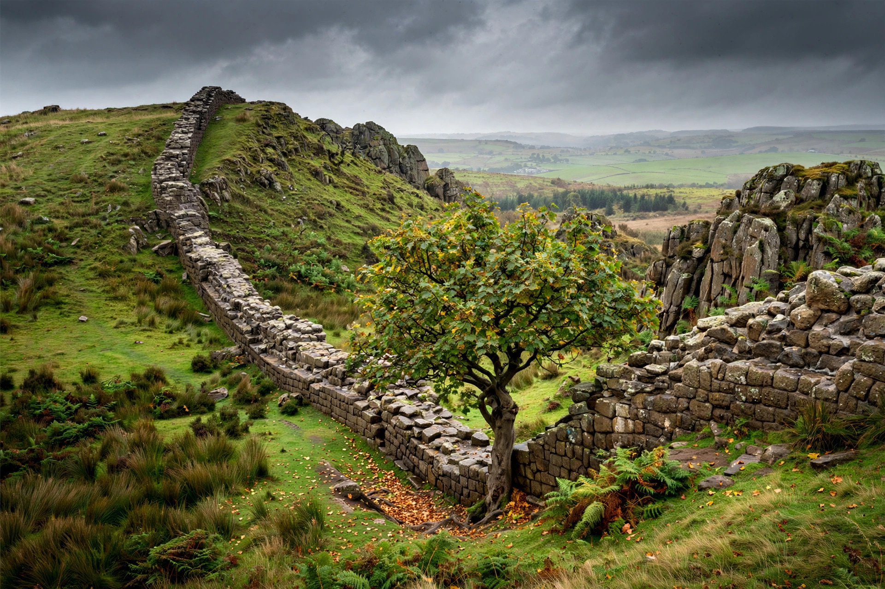

Hadrian's Wall
| Hadrian's Wall | |
|---|---|
| Location | Northern England, from Wallsend (Tyne) to Bowness-on-Solway |
| Length | 73 miles (117.5 km); 80 Roman miles |
| Built | Begun AD 122, under Emperor Hadrian |
| Status | UNESCO World Heritage Site (1987) |

Hadrian's Wall (Latin: Vallum Aelium) is a former defensive fortification of the Roman province of Britannia, begun in AD 122 in the reign of the emperor Hadrian. It ran from Wallsend on the River Tyne in the east to Bowness-on-Solway in the west, a distance of about 73 miles (117.5 km), and was the northernmost frontier of the Roman Empire for much of its occupation. A stone wall with a ditch to its north, punctuated by milecastles and turrets and backed by larger forts, it marked — in Hadrian's biographer's phrase — a barrier "to separate the Romans from the barbarians".
Construction
Hadrian came to Britain in AD 122 and ordered the wall built, probably as part of his policy of consolidating the empire's frontiers after years of expansion under Trajan. Three legions — the II Augusta, VI Victrix and XX Valeria Victrix — did most of the building over about six years. The original plan was a stone wall 10 Roman feet wide in the east and a turf wall in the west, with a guarded gate (milecastle) every Roman mile, two turrets between each pair, and a great ditch on the northern side. During construction the plan was widened: substantial forts such as Housesteads, Chesters and Birdoswald were placed directly on the wall line, the stone wall was narrowed, and a great earthwork, the Vallum — a flat-bottomed ditch between two mounds — was dug along the southern side, defining a military zone.
Life on the wall
The garrison consisted of auxiliary regiments, perhaps 9,000–15,000 men recruited from across the empire — Syrians, Spaniards, Gauls, Batavians and others. Civilian settlements (vici) grew outside the forts; the writing tablets from Vindolanda, just south of the wall, preserve everyday letters of the garrison community from around AD 100. The wall controlled movement and trade as much as it defended the province: crossing points were taxed and policed.
Abandonment and survival
The wall was briefly superseded by the Antonine Wall in Scotland after AD 142 but was reoccupied around 158 and remained the frontier until Roman Britain ended in the early 5th century. Thereafter its stone was robbed for churches, castles and farm buildings; General Wade's military road of the 1750s was laid along its line in places. Preservation began with antiquarians such as John Clayton in the 19th century. Today the wall is a UNESCO World Heritage Site (part of the transnational Frontiers of the Roman Empire listing), and the Hadrian's Wall Path National Trail follows its course coast to coast.